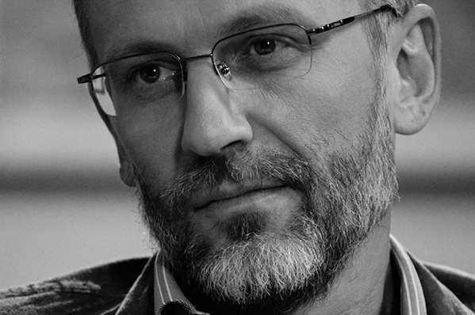
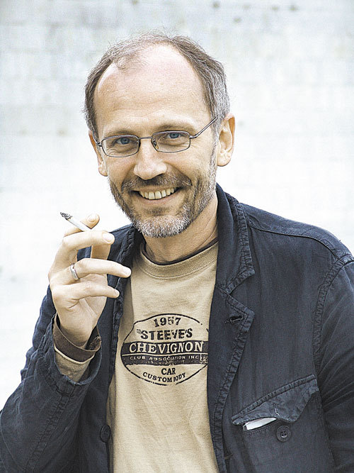

Александр Гордон говорит: «У меня абсолютно женские мозги»
Александр Гордон известен широкому зрителю как ведущий программы «Закрытый показ», строгий критик и резкий оппонент большинства современных российских кинодеятелей. Более же узкому кругу киноманов — как режиссер фильма «Пастух своих коров», снятого по произведению его отца Гарри Гордона почти 10 лет назад. Повесть Гарри Борисовича легла в основу и новой ленты Гордона «Огни притона». Съемки картины закончились в 2008 году, но из-за последствий кризиса она вышла на российские экраны совсем недавно.

«Огни притона» режиссер называет трагикомедией. Действие происходит в 1958 году в Одессе, впрочем, время и место этой истории — лишь фон для аллегоричной истории. Главная героиня — мама Люба (Оксана Фандера, получившая за эту роль специальную премию на фестивале «Кинотавр»), бывшая проститутка, открывшая собственное дело. Небольшой бордель располагается в обычной квартирке (быт конца 1950-х восстановлен с педантичной точностью). В нем работают две девушки — Зинка Гитлер (Катерина Шпица) и Зигота (Анна Слю). Туда же к Любе заходят бывшие клиенты — просто поговорить.

Заголовок H1 курсив полужирный курсив
Заголовок H2 курсив полужирный курсив
Заголовок H3 курсив полужирный курсив
Заголовок H4 курсив полужирный курсив
Текст курсив полужирный полужирный курсив
- Маркированный список
- Маркированный список
- Маркированный список
- Нумерованный список
- Нумерованный список
- Нумерованный список